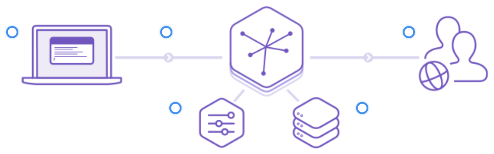
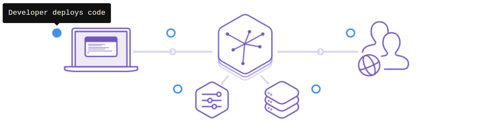
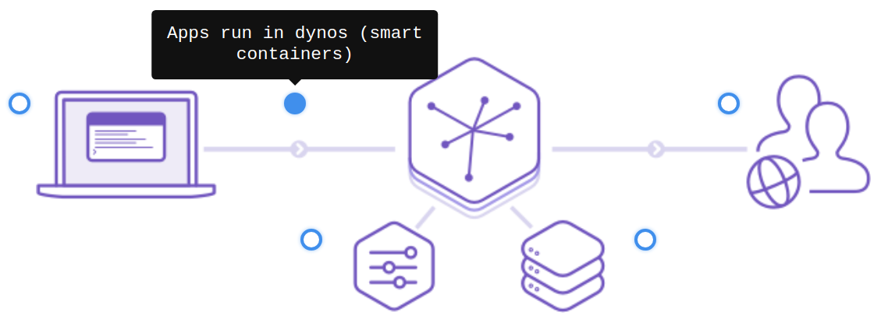
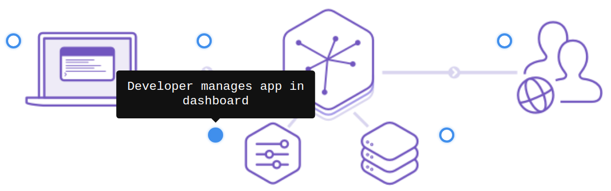
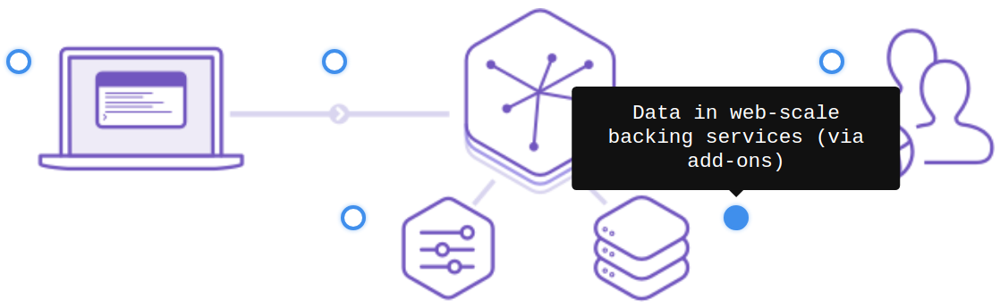
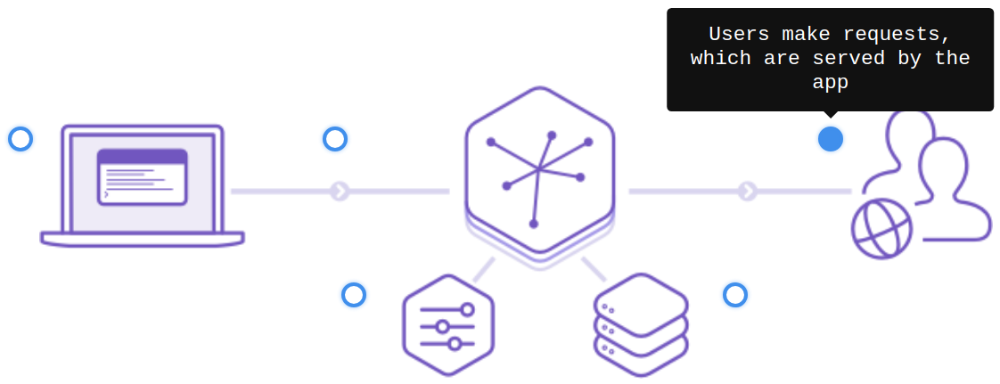
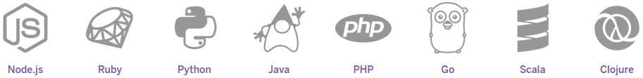

Cloud Computing: Servicios y Aplicaciones
Servicios incluidos en PaaS: Heroku

Adrián Morente Gabaldón
- Plataforma cloud para construir, desplegar, monitorizar y desplegar aplicaciones.
- Planes Dynos de distinto volumen (y precio).
- Herramienta CLI para desarrollo y gestión.
Experiencia del desarrollador (DX)

Experiencia del desarrollador (DX)

Experiencia del desarrollador (DX)

Experiencia del desarrollador (DX)

Experiencia del desarrollador (DX)

Experiencia del desarrollador (DX)

Servicios incluidos
- Desarrollo de aplicaciones
- Colaboración
- Manejo de datos
- Instrumentación, prestaciones y pruebas
- Almacenamiento
- Gestión de transacciones
Desarrollo de aplicaciones (Dev Center)
- Guía rápida para distintos lenguajes.
- Integración continua.
- Despliegue automático desde CLI o Git.
- Despliegue con imágenes de Docker (propias o de Container Registry

Instrumentación, prestaciones y pruebas